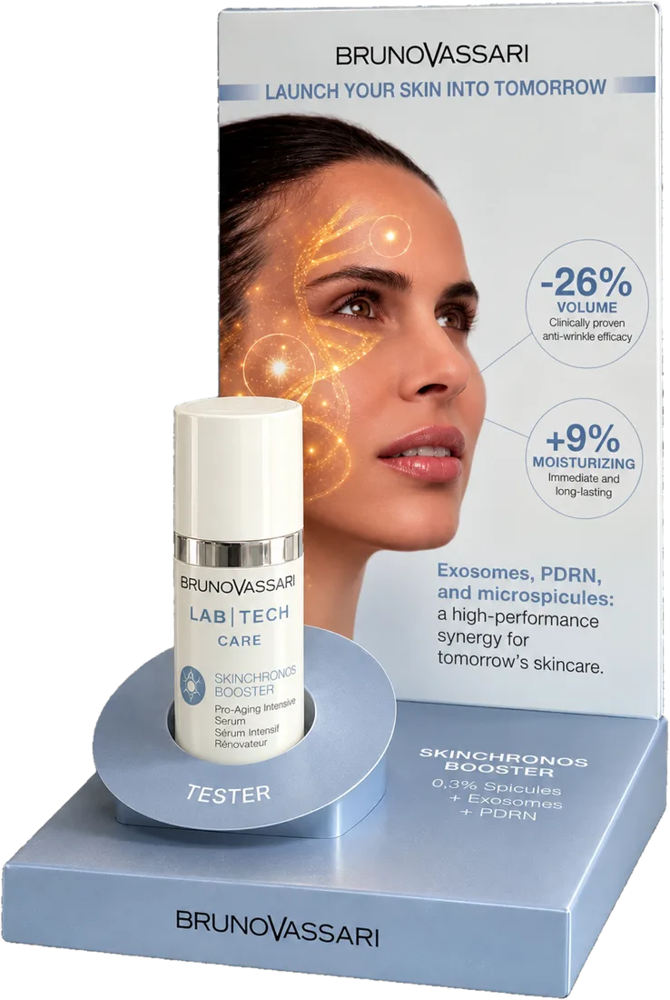

Enzo Evandri · Beauty StrategistNovità in cabina
Il microneedling che continua a casa, senza aghi.
Un siero con microspicule, esosomi e PDRN. Prima di raccontarti tutto, rispondi a 4 domande veloci in fondo.

Bruno Vassari · Lab Tech Care
Skinchronos Booster
Siero pro-aging intensivoTre attivi che oggi tutti nominano. Qui lavorano insieme.
0,3% spicule
Microspicule naturali che aprono micro-canali nella pelle, come fanno gli aghi in cabina, così gli attivi arrivano dove servono.
Esosomi
Vescicole messaggere: portano alla cellula i segnali di rinnovamento. È l'attivo di cui le tue clienti stanno sentendo parlare.
PDRN
Il "DNA di salmone" della medicina estetica, in versione cosmetica. Sostiene la rigenerazione della pelle.
−26%
volume delle rughe
+9%
idratazione di lunga durata
Dati dichiarati da Bruno Vassari sul materiale del prodotto.
Tu a che punto sei?
Tocca una risposta per ogni domanda. Alla fine me le mandi con un tocco su WhatsApp.
Come si usa a casa
- La sera, su pelle pulita e asciutta: 1–2 erogazioni, evitando occhi e labbra. Distribuire senza sfregare, poi la crema dopo qualche minuto.
- Si introduce piano: la prima settimana una sera sì e due no, la seconda a sere alterne. Al mattino protezione solare.
- Non insieme a dispositivi a luce o calore, e non subito dopo procedure dermatologiche. Non adatto a pelli sensibili, reattive o infiammate.
Vuoi provarlo in cabina?
Mandami le tue risposte: ti dico come inserirlo nei tuoi protocolli e nella vendita domiciliare.
Invia le risposte su WhatsApp+39 346 035 6595
Enzo Evandri · @enzo_evandri